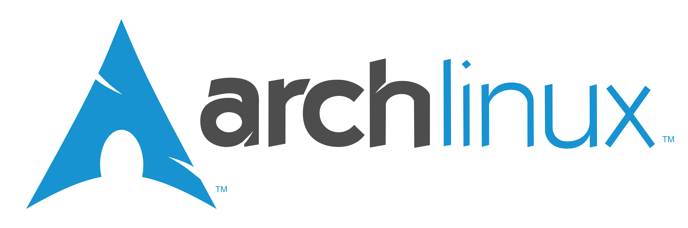

Isolating multiple PHP versions/apps with docker
The Goal of this presentation
- Highlight a specific usecase
- Using Docker for our benifit
- Inspire you to research more about Docker and co.
What this presentation is not
- This is NOT an introduction into Docker
- This is NOT a security talk
- This is NOT an in depth talk about all the features Docker has
A very short introduction of docker

Docker is a container system, it uses resource isolation features of the Linux kernel such as cgroups and kernel namespaces. This is used to isolate the process and its software stack from the rest of the system without the overhead of a virtual machine. This will allow us to have a predictable outcome of the process running.
Learn more about docker
The Goal
- Single Server Machine
- Multiple PHP installations
- Multiple PHP apps
The Setup
ArchLinux
Why ArchLinux as base OS ? Isn't Everyone using Debian based OS'es these days ?
- I'm very familiar with it
- systemd
nginx

We'll use nginx because it is low hassle in configuration and works a lot better with fpm versus some other webservers.
percona

Just because MySQL is no longer officially supported on ArchLinux and MariaDB gave me issues some time ago.
PHP versions

- PHP 5.3 dockerized based on ubuntu 12.04
- PHP 5.5 dockerized based on ubuntu 14.04
- PHP 5.6 dockerized based on ArchLinux
PHP apps


- Wordpress: because it seems to be very widely used
- MyBB: nostalgia to a long forgotten past
- ownCloud: because it gives you back the control over your data
.jpg)
Questions ?
WARNING: you might have a lot of questions I don't know the answer to.
Usefull resources
Ike Devolder
@BlackIkeEagle
Senior Webdeveloper - Studio Emma
Archlinux Trusted User
enthousiast about docker